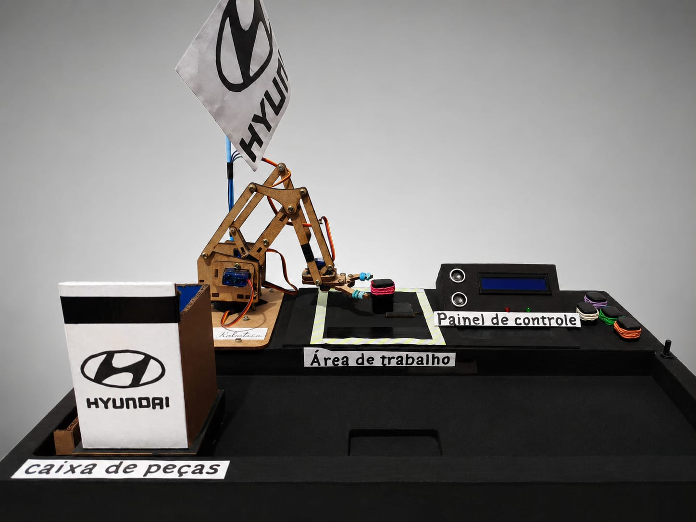
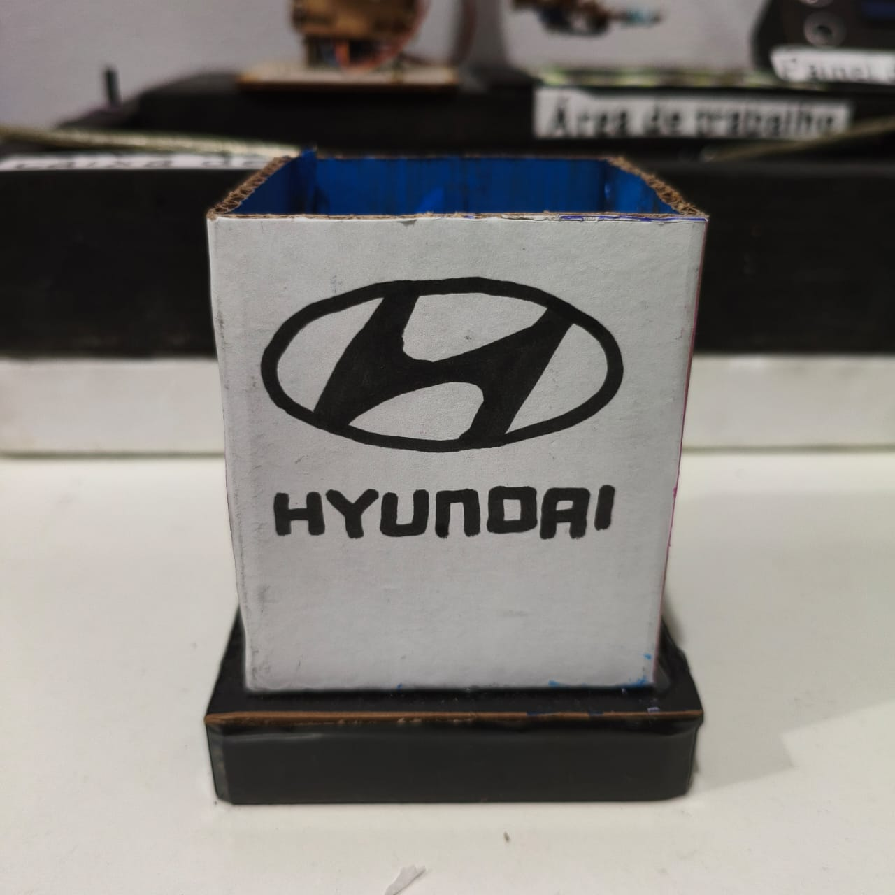
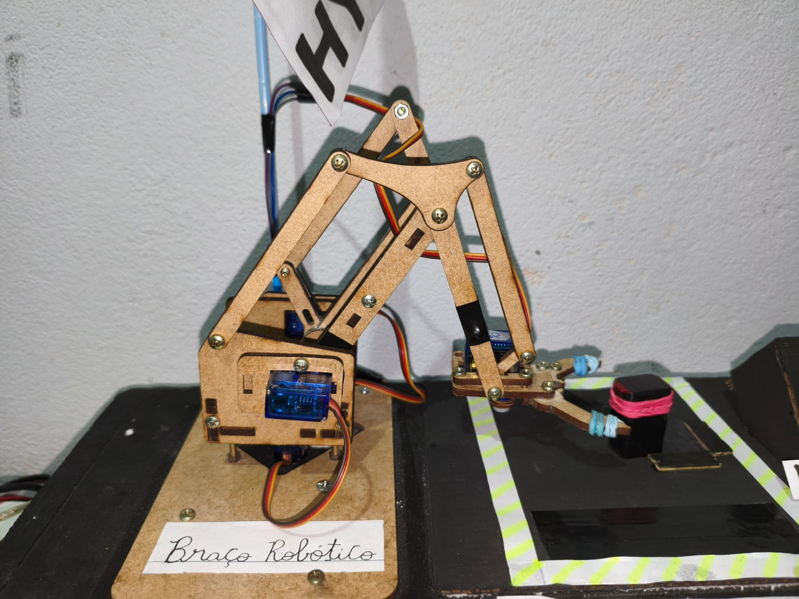
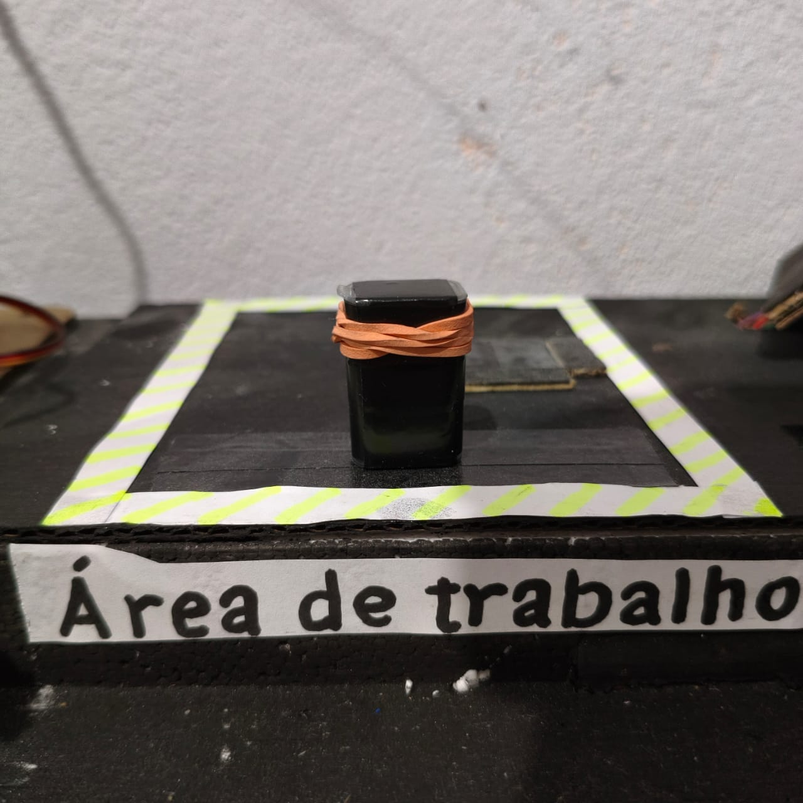
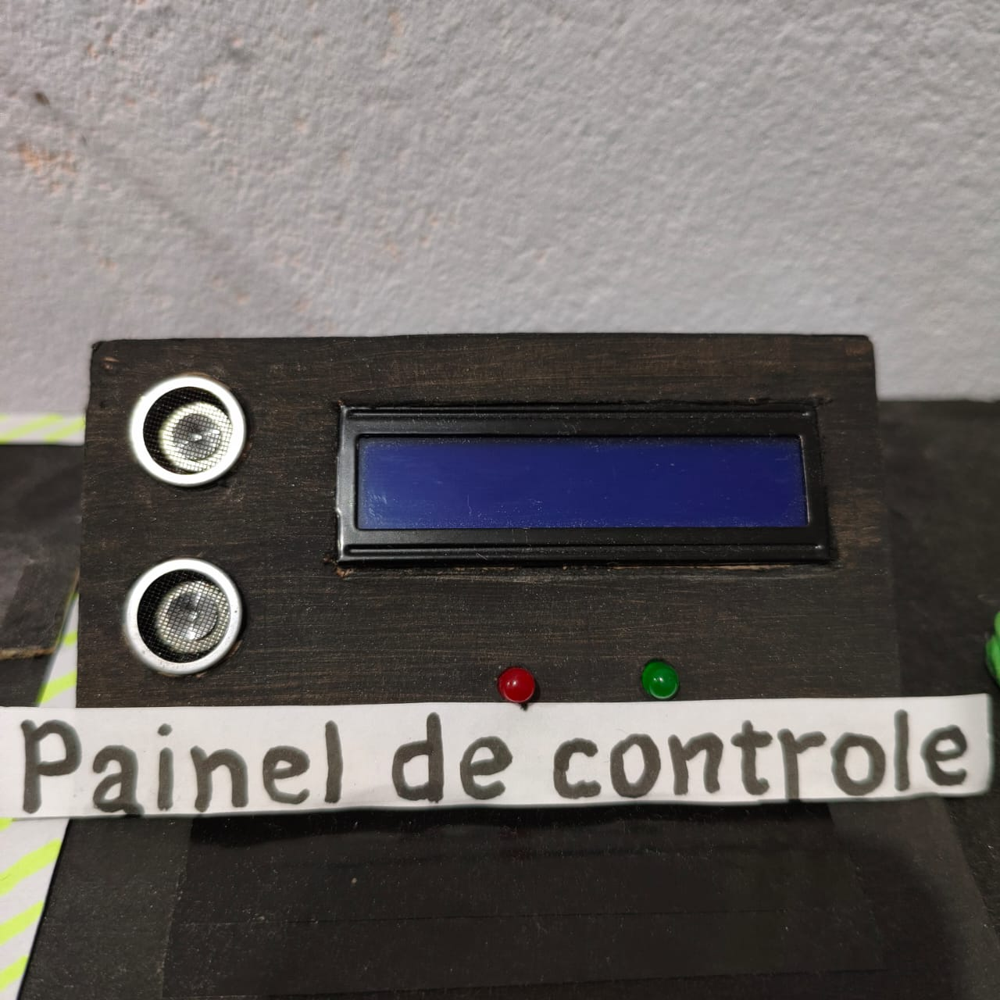

Objetivo
Mostrar, de forma prática, como a robótica pode automatizar tarefas repetitivas com precisão e baixo custo.

Automação inteligente inspirada na indústria automotiva
Este projeto apresenta um braço robótico capaz de transportar pequenas peças entre diferentes áreas da estação de trabalho. O sistema é controlado por um painel eletrônico com display LCD e botões, simulando uma etapa de uma linha de produção industrial.
Mostrar, de forma prática, como a robótica pode automatizar tarefas repetitivas com precisão e baixo custo.
A robótica pode ser utilizada em linhas de montagem, separação de peças, movimentação de materiais e diversas outras tarefas industriais.
Maior produtividade, redução de erros, movimentos mais precisos e mais segurança durante as operações.
Durante o desenvolvimento, alguns dos principais desafios foram calibrar os servomotores, estabilizar a estrutura de MDF e sincronizar corretamente os movimentos do braço.
O desenvolvimento envolveu o planejamento do projeto, corte e montagem das peças, instalação dos componentes eletrônicos e programação do sistema em Arduino.
A estrutura utiliza MDF e componentes eletrônicos que podem ser reaproveitados em outros projetos, contribuindo para o uso consciente dos materiais.
Controla todo o sistema e executa a programação responsável pelo funcionamento do projeto.
Permitem realizar os movimentos do braço robótico, controlando suas diferentes articulações.
Detecta a presença e a distância de objetos, auxiliando no controle da operação.
Indicam diferentes estados do sistema, facilitando o acompanhamento da operação.
Exibe informações, mensagens e o status da operação durante o funcionamento do sistema.
Define a lógica de funcionamento, os comandos e os movimentos realizados pelo braço robótico.
O funcionamento do sistema acontece em quatro etapas, desde a coleta da peça até o seu posicionamento na área de trabalho.

Local onde a peça é colocada após ser transportada pelo braço.

O braço coleta a peça e a movimenta até o local determinado.

Local onde as peças ficam antes de serem coletadas pelo braço robótico.

Permite controlar o sistema e acompanhar suas informações por meio do display LCD e dos botões.
Conheça os principais componentes do protótipo. Clique nos pontos da imagem para descobrir como cada parte funciona.
Passe o mouse sobre a imagem para o efeito 3D e clique nos números para ver a função de cada parte do braço.
Veja uma simulação do braço robótico realizando o ciclo de movimentação de uma peça.
Confira alguns registros do protótipo durante o desenvolvimento e a preparação para a apresentação.
Responsável pelo planejamento, montagem, programação e apresentação do projeto.